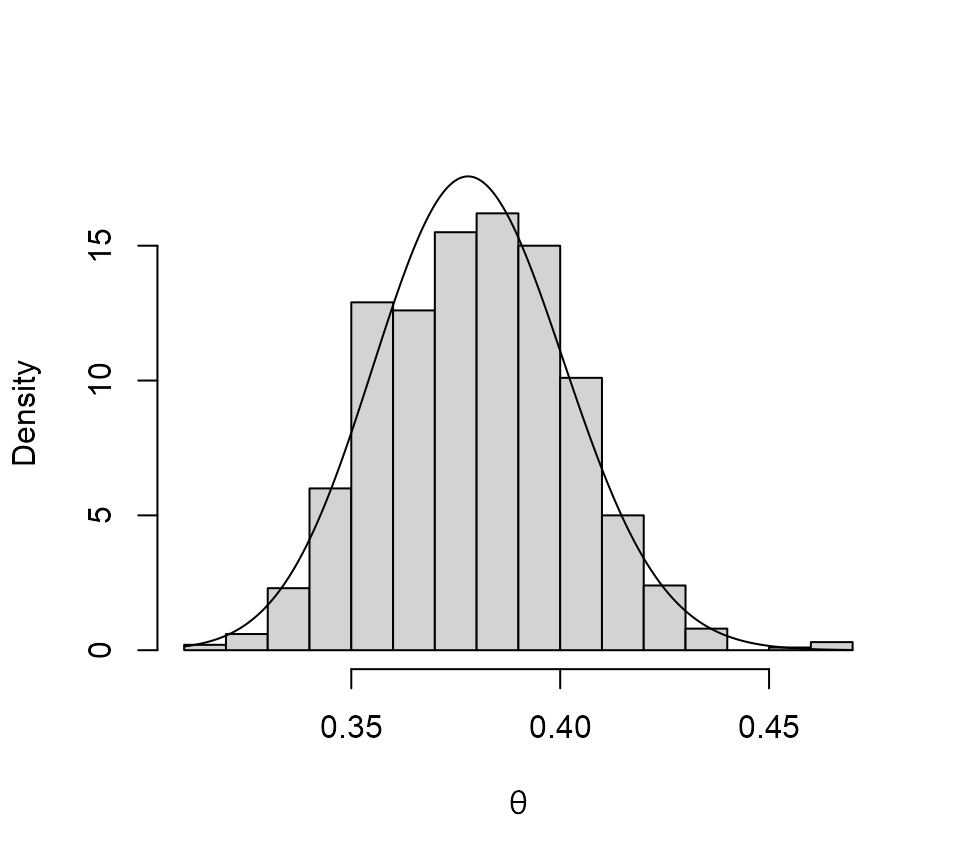

vignettes/revdbayes-d-kgaps-vignette.Rmd
revdbayes-d-kgaps-vignette.RmdThe models considered in the Introducing revdbayes vignette are based on the assumption that observations of a (univariate) quantity of interest can be treated as independent and identically distributed (iid) variates. In many instances these assumptions are unrealistic. In this vignette we consider the situation when it is not reasonable to make the former assumption, that is, temporal dependence is present. In this circumstance a key issue is the strength of dependence between extreme events. Under conditions that preclude dependence between extreme events that occur far apart in time, the effect of dependence is local in time, resulting in a tendency for extreme to a occur in clusters. The most common measure of the strength of local extremal dependence is the extremal index \(\theta\). For a review of theory and methods for time series extremes see Chavez-Demoulin and Davison (2012).
The extremal index has several interpretations and leading to different models/methods by which inferences about \(\theta\) can be made. Here we consider a model based on the behaviour of occurrences of exceedances of a high threshold. The K-gaps model of Süveges and Davison (2010) extends the model of Ferro and Segers (2003) by incorporating a run length parameter \(K\). Under this model threshold inter-exceedance times not larger than \(K\) are part of the same cluster and other inter-exceedance times have an exponential distribution with rate parameter \(\theta\). Thus, \(\theta\) has dual role as the probability that a process leaves one cluster of threshold exceedances and as the reciprocal of the mean time until the process enters the next cluster. For details see Süveges and Davison (2010).
The revdbayes packages provides functions for performing maximum likelihood and Bayesian inferences about \(\theta\) under the K-gaps model. We illustrate the code using the newlyn dataset, which is analysed in Fawcett and Walshaw (2012). For the sake of illustration we use the default setting, \(K = 1\), which may not be appropriate for these data. See Süveges and Davison (2010) for discussion of this issue and for methodology to inform the choice of \(K\).
The function kgaps_mle finds the maximum likelihood estimate and its estimated standard error and (optionally) a conf% level likelihood-based confidence interval for \(\theta\).
The function kgaps_post simulates a random sample from the posterior distribution of \(\theta\) based on a Beta(\(\alpha, \beta\)) prior. The use can choose the values of \(\alpha\) and \(\beta\). The default setting is \(\alpha = \beta = 1\), that is, a U(0,1) prior for \(\theta\). See Attalides (2015) for further information and for a methods for selecting the value of the threshold in this situation. The plot produced below is is histogram of the sample from the posterior with the posterior density superimposed.
thresh <- quantile(newlyn, probs = 0.90)
postsim <- kgaps_post(newlyn, thresh)
plot(postsim, xlab = expression(theta))
Attalides, N. 2015. “Threshold-Based Extreme Value Modelling.” PhD thesis, University College London.
Chavez-Demoulin, V., and A. C. Davison. 2012. “Modelling Time Series Extremes.” REVSTAT-Statistical Journal 10 (1): 109–33. https://www.ine.pt/revstat/pdf/rs120105.pdf.
Fawcett, L., and D. Walshaw. 2012. “Estimating Return Levels from Serially Dependent Extremes.” Environmetrics 23 (3): 272–83. doi:10.1002/env.2133.
Ferro, C. A. T., and J. Segers. 2003. “Inference for Clusters of Extreme Values.” Journal of the Royal Statistical Society: Series B (Statistical Methodology) 65 (2). Blackwell Publishing: 545–56. doi:10.1111/1467-9868.00401.
Süveges, M., and A. C. Davison. 2010. “Model Misspecification in Peaks over Threshold Analysis.” The Annals of Applied Statistics 4 (1): 203–21. doi:10.1214/09-AOAS292.